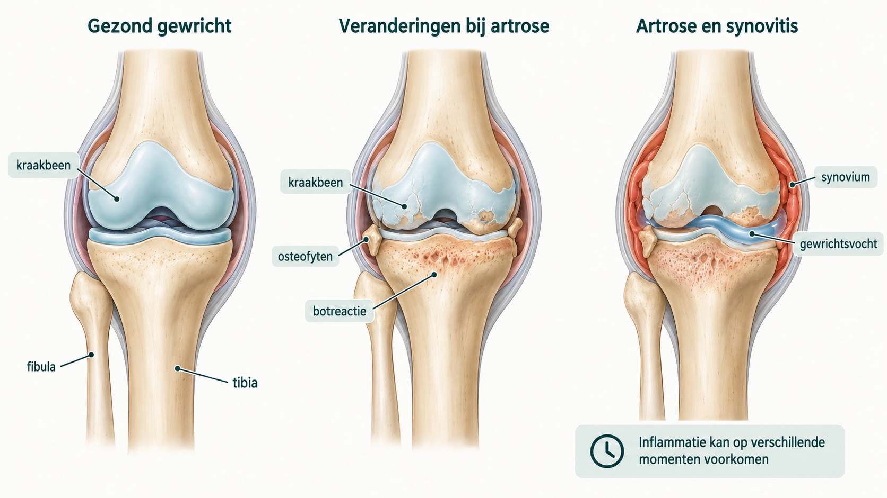

Wat is knieartrose?
Bij artrose verandert niet alleen het kraakbeen. Ook het bot, het gewrichtskapsel en andere structuren rond de knie kunnen veranderen. Het gewrichtsslijmvlies kan tijdelijk ontstoken raken. Dit heet synovitis en kan samengaan met extra gewrichtsvocht. De knie kan daardoor pijnlijk, stijf of dik worden.

Knieartrose ontstaat meestal door een combinatie van factoren. Leeftijd, aanleg, eerder letsel of een operatie, stand van het been, belasting, spierfunctie en lichaamsgewicht kunnen meespelen.
Welke klachten kunnen bij knieartrose passen?
Veelgenoemde klachten zijn pijn bij lopen of traplopen, startstijfheid, moeite met lang staan, zwelling na belasting en minder vertrouwen in bewegen. Soms kraakt de knie of voelt deze minder beweeglijk. De ernst en het verloop verschillen sterk per persoon.
Kniepijn is niet automatisch artrose. Meniscusklachten, peesklachten, pijn vanuit heup of rug, een ontstekingsziekte of ander letsel kunnen vergelijkbare klachten geven. Nieuwe forse zwelling, roodheid, warmte, koorts, een ongeval of niet kunnen belasten vraagt beoordeling via de officiële zorgroute.
Hoe verloopt knieartrose?
Knieartrose verloopt niet bij iedereen hetzelfde. Perioden met weinig klachten kunnen worden afgewisseld door dagen of weken met meer pijn, stijfheid of zwelling. Zo'n tijdelijke opleving betekent niet automatisch dat de artrose ineens sterk is toegenomen.
Ook op langere termijn is het verloop niet volledig te voorspellen. Niet iedereen gaat steeds verder achteruit en een knieprothese is geen onvermijdelijk eindpunt. Het blijft zinvol om te kijken wat helpt om dagelijkse activiteiten, spierkracht en conditie zo goed mogelijk te behouden.
Hoe wordt knieartrose beoordeeld?
De beoordeling begint bij wat iemand merkt in het dagelijks leven: waar zit de pijn, welke activiteiten lukken minder goed, hoe lang bestaan de klachten en wat is al geprobeerd? Bij lichamelijk onderzoek wordt onder meer gekeken naar stand, beweeglijkheid, zwelling, stabiliteit, kracht en looppatroon.
De diagnose knieartrose kan doorgaans worden gesteld op basis van de klachten en het lichamelijk onderzoek. Een röntgenfoto is daarvoor in de regel niet nodig. Als er een specifieke aanleiding is voor beeldvorming, kan een staande röntgenfoto informatie geven over de gewrichtsspleet, botveranderingen en de stand van het been. Een MRI-scan is bij een gebruikelijk beeld van knieartrose in de regel niet nodig.
Hoe wordt de behandeling stap voor stap opgebouwd?
Artrosezorg wordt meestal stapsgewijs opgebouwd. Dit wordt ook wel stepped care genoemd. De eerste stap bestaat uit zorg die voor vrijwel iedereen van waarde kan zijn. Als klachten en beperkingen blijven bestaan, kan gerichtere begeleiding worden toegevoegd. Pas daarna wordt beoordeeld of een volgende stap nodig en passend is.
Begrijpen en blijven bewegen
Uitleg over artrose, haalbare doelen, het verdelen en opbouwen van belasting en passende dagelijkse beweging vormen de basis.
Gericht ondersteunen
Oefen- of fysiotherapie, pijnstillende medicatie, hulpmiddelen en begeleiding bij leefstijl of gewicht kunnen worden toegevoegd als dat past bij de klachten en situatie.
Opnieuw beoordelen
Bij aanhoudende pijn of beperkingen wordt bekeken wat al is geprobeerd en of een injectie of specialistische beoordeling passend kan zijn.
De stappen zijn geen strak afvinklijstje en kunnen deels naast elkaar lopen. Een volgende stap is niet automatisch beter of zwaarder: het gaat om zorg die past bij de klachten, de belastbaarheid en de persoonlijke doelen. Een operatie is binnen dit model geen vanzelfsprekend eindpunt.
Waar kun je zelf mee beginnen?
Kies eerst één activiteit die je wilt behouden of weer makkelijker wilt kunnen doen, bijvoorbeeld wandelen, fietsen, traplopen of boodschappen doen. Dat geeft meer houvast dan alleen proberen om “meer te bewegen”.
- Begin op een niveau dat op de meeste dagen haalbaar is.
- Verdeel een langere activiteit zo nodig over meerdere korte momenten.
- Bouw één ding tegelijk op, bijvoorbeeld eerst de duur en pas later het tempo.
- Kijk niet alleen naar pijn tijdens de activiteit, maar ook naar het herstel en functioneren erna.
Een tijdelijke toename van pijn of stijfheid kan voorkomen. Is de reactie duidelijk sterker dan verwacht, schakel dan tijdelijk terug. Probeer de knie wel te blijven bewegen en pak de activiteit weer verder op zodra het beter gaat. Meer praktische uitleg staat op Bewegen bij artrose.
Welke aanvullende mogelijkheden zijn er?
Pijnstillende medicatie
Pijnstillende medicatie geneest de artrose niet, maar kan soms helpen om te blijven bewegen of dagelijkse activiteiten beter vol te houden. Welke vorm veilig en passend is, hangt onder meer af van andere aandoeningen en medicatie. Gebruik daarvoor de informatie van de huisarts, apotheek of Thuisarts.
Een injectie in de knie
Een injectie met een corticosteroïd kan bij veel pijn of een duidelijke ontstekingsreactie tijdelijk verlichting geven. Het effect verschilt per persoon, neemt meestal weer af en de injectie herstelt het kraakbeen niet. Vanwege mogelijke nadelen wordt zo'n injectie niet onbeperkt herhaald. In de periode voor een geplande knieprothese gelden extra beperkingen.
Hulpmiddelen en aanpassingen
Een wandelstok, krukken of rollator kunnen tijdens een pijnlijke periode helpen om activiteiten te blijven doen. Soms zijn tijdelijke aanpassingen van werk, huishouden of dagelijkse planning nuttig. Een fysiotherapeut, oefentherapeut of ergotherapeut kan hierover meedenken. Kniebraces en inlegzolen helpen niet aantoonbaar bij iedereen en zijn daarom geen automatische standaardstap.
Bij knie- of heupartrose worden vanuit de basisverzekering maximaal twaalf behandelingen gesuperviseerde oefentherapie vergoed, te verdelen over maximaal twaalf maanden vanaf de eerste behandeling. Voor volwassenen valt deze zorg onder het eigen risico. Controleer ook de actuele polisvoorwaarden en of de behandelaar een contract met de zorgverzekeraar heeft.
Behandelingen waarover vaak vragen bestaan
Een kijkoperatie om de knie bij gewone artrose “schoon te maken” is doorgaans geen standaardbehandeling. PRP-injecties worden in de Nederlandse richtlijn niet aanbevolen buiten wetenschappelijk onderzoek. Injecties met hyaluronzuur gelden niet als standaard eerste behandeling. Bespreek nieuwe of commercieel aangeboden behandelingen zorgvuldig en vraag wat bekend is over effect, risico's, kosten en vergoeding.
Wanneer wordt een knieprothese besproken?
Een knieprothese kan worden besproken wanneer pijn en beperkingen groot zijn, artrose op beeldvorming past bij de klachten en passende zorg zonder operatie onvoldoende helpt. Ook gezondheid, operatierisico's, herstelmogelijkheden en verwachtingen wegen mee.
Een knieprothese is geen automatische eindstap en maakt de knie niet weer normaal. De mogelijke verbetering moet worden afgewogen tegen herstelbelasting en risico's. Lees voor de specifieke samenhang met obesitas ook Knieprothese bij obesitas.
Welke vragen kunnen helpen in het gesprek?
- Past het klachtenpatroon bij knieartrose of kan er iets anders meespelen?
- Wat is voor mij het belangrijkste doel: pijn, lopen, werk, slaap of een andere activiteit?
- Welke ondersteuning zonder operatie past bij mijn situatie?
- Welke voordelen, beperkingen en risico's horen bij een eventuele operatie?
Bronnen en verdere uitleg
- Thuisarts/NHG. Ik heb artrose in mijn knie. Officiële Nederlandse publieksinformatie.
- ReumaNederland. De juiste zorg op het juiste moment. Publieksuitleg over stapsgewijze artrosezorg.
- Rijksoverheid. Vergoeding fysiotherapie en oefentherapie. Actuele informatie over het basispakket in 2026.
- Richtlijnendatabase/NOV. Intra-articulaire injecties. Nederlandse richtlijnmodule uit 2019 over corticosteroïden, PRP en hyaluronzuur.
- Richtlijnendatabase/NOV. Artroscopie bij artrose van de knie. Richtlijnmodule uit 2019 over de beperkte plaats van een kijkoperatie.
- NICE. Osteoarthritis: topic description. Beschrijft kraakbeenverlies, botremodellering, osteofyten en synovitis als veranderingen binnen het gewricht.
- Gosens T, van Dam MJJ, Korst J, Maas L, Aarnoudse G. Artrosezorg in transitie. Ned Tijdschr Geneeskd. 2026;170:D8889.
Verder lezen